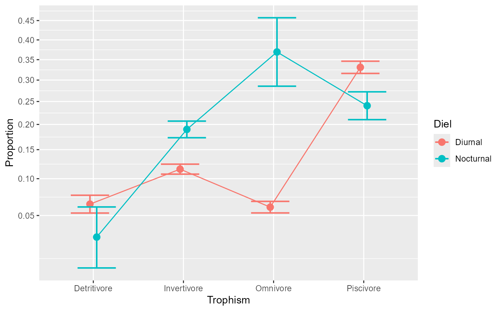
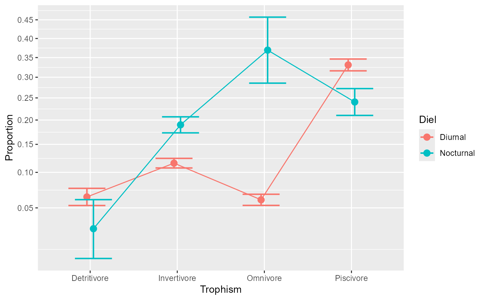

emProportions: simple effect analysis of proportions.
Source:R/ANOPA-emProportions.R
emProportions.RdThe function 'emProportions()' performs a simple effect analyses of proportions after an omnibus analysis has been obtained with 'anopa()' according to the ANOPA framework. Alternatively, it is also called an expected marginal analysis of proportions. See lc23b;textualANOPA for more.
Arguments
- w
An ANOPA object obtained from
anopa();- formula
A formula which indicates what simple effect to analyze. Only one simple effect formula at a time can be analyzed. The formula is given using a vertical bar, e.g., " ~ factorA | factorB " to obtain the effect of Factor A within every level of the Factor B. The dependent variable(s) (lhs of equation) are not needed as they are memorized in the w object.
Value
An ANOPA table of the various simple main effects and if relevant, of the simple interaction effects.
Details
emProportions() computes expected marginal proportions and
analyzes the hypothesis of equal proportion.
The sum of the _F_s of the simple effects are equal to the
interaction and main effect _F_s, as this is an additive decomposition
of the effects.
Examples
# -- FIRST EXAMPLE --
# This is a basic example using a two-factors design with the factors between
# subjects. Ficticious data present the number of success according
# to Class (three levels) and Difficulty (two levels) for 6 possible cells
# and 72 observations in total (equal cell sizes of 12 participants in each group).
twoWayExample
#> Class Difficulty success total
#> 1 First Easy 11 12
#> 2 First Moderate 9 12
#> 3 First Difficult 6 12
#> 4 Last Easy 10 12
#> 5 Last Moderate 8 12
#> 6 Last Difficult 3 12
# As seen the data are provided in a compiled format (one line per group).
# Performs the omnibus analysis first (mandatory):
w <- anopa( {success;total} ~ Difficulty * Class, twoWayExample)
summary(w)
#> MS df F pvalue correction Fcorr pvalcorr
#> Difficulty 0.136787 2 6.839333 0.001071 1.027778 6.654486 0.001288
#> Class 0.032569 1 1.628455 0.201917 1.013889 1.606147 0.205034
#> Difficulty:Class 0.003660 2 0.183006 0.832763 1.243056 0.147223 0.863102
#> Error(between) 0.020000 Inf
# The results shows an important interaction. You can visualize the data
# using anopaPlot:
anopaPlot(w)
# The interaction is overadditive, with a small differences between Difficulty
# levels in the first class, but important differences between Difficulty for
# the last class.
# Let's execute the simple effect of Difficulty for every levels of Class
e <- emProportions(w, ~ Difficulty | Class )
summary(e)
#> MS df F pvalue correction Fcorr
#> Difficulty | Class = First 0.050932 2 2.546587 0.078349 1.055556 2.412556
#> Difficulty | Class = Last 0.089515 2 4.475751 0.011382 1.055556 4.240186
#> pvalcorr
#> Difficulty | Class = First 0.089586
#> Difficulty | Class = Last 0.014405
# -- SECOND EXAMPLE --
# Example using the Arrington et al. (2002) data, a 3 x 4 x 2 design involving
# Location (3 levels), Trophism (4 levels) and Diel (2 levels), all between subject.
ArringtonEtAl2002
#> Location Trophism Diel s n
#> 1 Africa Detritivore Diurnal 16 217
#> 2 Africa Invertivore Diurnal 76 498
#> 3 Africa Invertivore Nocturnal 55 430
#> 4 Africa Omnivore Diurnal 2 87
#> 5 Africa Piscivore Diurnal 673 989
#> 6 Africa Piscivore Nocturnal 221 525
#> 7 Central/South America Detritivore Diurnal 68 1589
#> 8 Central/South America Detritivore Nocturnal 9 318
#> 9 Central/South America Invertivore Diurnal 706 7452
#> 10 Central/South America Invertivore Nocturnal 486 2101
#> 11 Central/South America Omnivore Diurnal 293 6496
#> 12 Central/South America Omnivore Nocturnal 82 203
#> 13 Central/South America Piscivore Diurnal 1275 5226
#> 14 Central/South America Piscivore Nocturnal 109 824
#> 15 North America Detritivore Diurnal 142 1741
#> 16 North America Invertivore Diurnal 525 3368
#> 17 North America Invertivore Nocturnal 231 1539
#> 18 North America Omnivore Diurnal 210 1843
#> 19 North America Omnivore Nocturnal 7 38
#> 20 North America Piscivore Diurnal 536 1289
#> 21 North America Piscivore Nocturnal 19 102
# first, we perform the omnibus analysis (mandatory):
w <- anopa( {s;n} ~ Location * Trophism * Diel, ArringtonEtAl2002)
#> ANOPA::fyi(1): Combination of cells missing. Adding:
#> Location Trophism Diel s n
#> Africa Detritivore Nocturnal 0 0
#> Africa Omnivore Nocturnal 0 0
#> North America Detritivore Nocturnal 0 0
#> Warning: ANOPA::warning(1): Some cells have zero over zero data. Imputing...
summary(w)
#> MS df F pvalue correction Fcorr
#> Location 0.027449 2 0.961802 0.382203 1.000112 0.961694
#> Trophism 0.095656 3 3.351781 0.018102 1.000115 3.351396
#> Diel 0.029715 1 1.041227 0.307536 1.000049 1.041176
#> Location:Trophism 0.029485 6 1.033146 0.401285 1.013842 1.019041
#> Location:Diel 0.005277 2 0.184900 0.831187 1.010164 0.183040
#> Trophism:Diel 0.073769 3 2.584868 0.051365 1.012197 2.553721
#> Location:Trophism:Diel 0.011297 6 0.395837 0.882184 1.055660 0.374967
#> Error(between) 0.028539 Inf
#> pvalcorr
#> Location 0.382245
#> Trophism 0.018111
#> Diel 0.307548
#> Location:Trophism 0.410515
#> Location:Diel 0.832735
#> Trophism:Diel 0.053559
#> Location:Trophism:Diel 0.895351
#> Error(between)
# There is a near-significant interaction of Trophism * Diel (if we consider
# the unadjusted p value, but you really should consider the adjusted p value...).
# If you generate the plot of the four factors, we don't see much:
anopaPlot(w)
 #... but a plot specifically of the interaction helps:
anopaPlot(w, ~ Trophism * Diel )

# it seems that the most important difference is for omnivorous fishes
# (keep in mind that there were missing cells that were imputed but there does not
# exist to our knowledge agreed-upon common practices on how to impute proportions...
# Are you looking for a thesis topic?).
# Let's analyse the simple effect of Trophism for every levels of Diel and Location
e <- emProportions(w, ~ Trophism * Location | Diel )
summary(e)
#> MS df F pvalue correction
#> Location | Diel = Diurnal 0.023357 2 0.818413 0.441131 1.000162
#> Trophism | Diel = Diurnal 0.154120 3 5.400358 0.001031 1.000130
#> Location:Trophism | Diel = Diurnal 0.013958 6 0.489075 0.817028 1.007422
#> Location | Diel = Nocturnal 0.009369 2 0.328290 0.720154 1.000429
#> Trophism | Diel = Nocturnal 0.015305 3 0.536291 0.657380 1.001707
#> Location:Trophism | Diel = Nocturnal 0.026824 6 0.939909 0.464764 2.009858
#> Fcorr pvalcorr
#> Location | Diel = Diurnal 0.818280 0.441190
#> Trophism | Diel = Diurnal 5.399658 0.001032
#> Location:Trophism | Diel = Diurnal 0.485472 0.819705
#> Location | Diel = Nocturnal 0.328149 0.720256
#> Trophism | Diel = Nocturnal 0.535377 0.658001
#> Location:Trophism | Diel = Nocturnal 0.467649 0.832785
# You can ask easier outputs with
corrected(w) # or summary(w) for the ANOPA table only
#> MS df F correction Fcorr pvalcorr
#> Location 0.027449 2 0.961802 1.000112 0.961694 0.382245
#> Trophism 0.095656 3 3.351781 1.000115 3.351396 0.018111
#> Diel 0.029715 1 1.041227 1.000049 1.041176 0.307548
#> Location:Trophism 0.029485 6 1.033146 1.013842 1.019041 0.410515
#> Location:Diel 0.005277 2 0.184900 1.010164 0.183040 0.832735
#> Trophism:Diel 0.073769 3 2.584868 1.012197 2.553721 0.053559
#> Location:Trophism:Diel 0.011297 6 0.395837 1.055660 0.374967 0.895351
#> Error(between) 0.028539 Inf
explain(w) # human-readable ouptut ((pending))
#> [1] "method explain not yet done..."
#... but a plot specifically of the interaction helps:
anopaPlot(w, ~ Trophism * Diel )

# it seems that the most important difference is for omnivorous fishes
# (keep in mind that there were missing cells that were imputed but there does not
# exist to our knowledge agreed-upon common practices on how to impute proportions...
# Are you looking for a thesis topic?).
# Let's analyse the simple effect of Trophism for every levels of Diel and Location
e <- emProportions(w, ~ Trophism * Location | Diel )
summary(e)
#> MS df F pvalue correction
#> Location | Diel = Diurnal 0.023357 2 0.818413 0.441131 1.000162
#> Trophism | Diel = Diurnal 0.154120 3 5.400358 0.001031 1.000130
#> Location:Trophism | Diel = Diurnal 0.013958 6 0.489075 0.817028 1.007422
#> Location | Diel = Nocturnal 0.009369 2 0.328290 0.720154 1.000429
#> Trophism | Diel = Nocturnal 0.015305 3 0.536291 0.657380 1.001707
#> Location:Trophism | Diel = Nocturnal 0.026824 6 0.939909 0.464764 2.009858
#> Fcorr pvalcorr
#> Location | Diel = Diurnal 0.818280 0.441190
#> Trophism | Diel = Diurnal 5.399658 0.001032
#> Location:Trophism | Diel = Diurnal 0.485472 0.819705
#> Location | Diel = Nocturnal 0.328149 0.720256
#> Trophism | Diel = Nocturnal 0.535377 0.658001
#> Location:Trophism | Diel = Nocturnal 0.467649 0.832785
# You can ask easier outputs with
corrected(w) # or summary(w) for the ANOPA table only
#> MS df F correction Fcorr pvalcorr
#> Location 0.027449 2 0.961802 1.000112 0.961694 0.382245
#> Trophism 0.095656 3 3.351781 1.000115 3.351396 0.018111
#> Diel 0.029715 1 1.041227 1.000049 1.041176 0.307548
#> Location:Trophism 0.029485 6 1.033146 1.013842 1.019041 0.410515
#> Location:Diel 0.005277 2 0.184900 1.010164 0.183040 0.832735
#> Trophism:Diel 0.073769 3 2.584868 1.012197 2.553721 0.053559
#> Location:Trophism:Diel 0.011297 6 0.395837 1.055660 0.374967 0.895351
#> Error(between) 0.028539 Inf
explain(w) # human-readable ouptut ((pending))
#> [1] "method explain not yet done..."